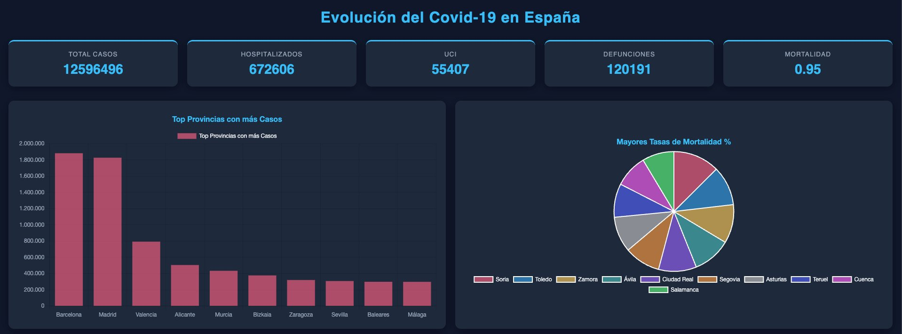
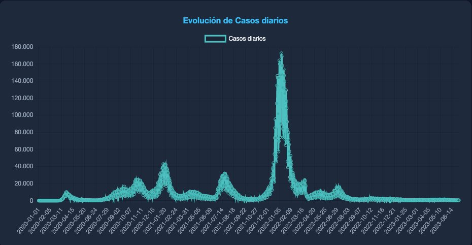
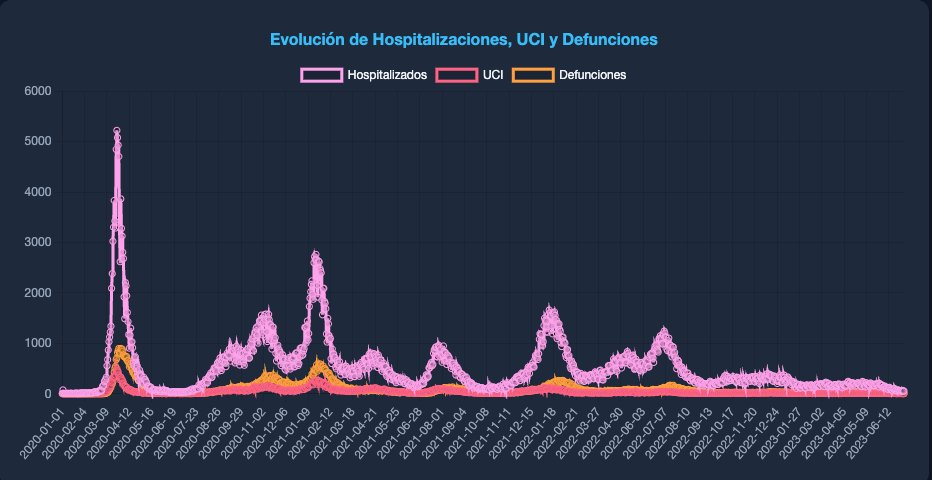
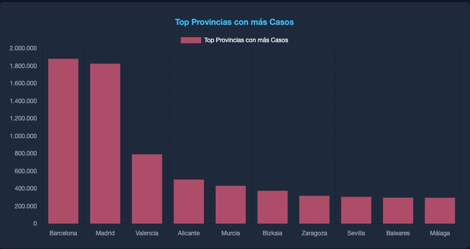
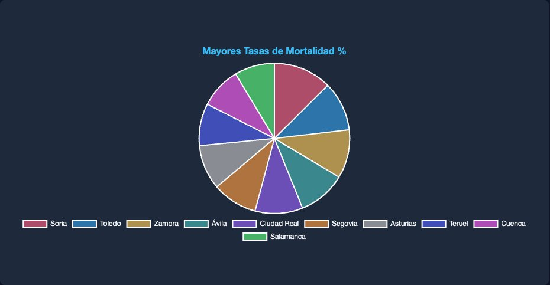
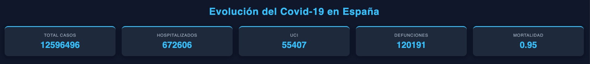

Sobre mí
Soy Filipi Henrique, desarrollador Python y analista de datos junior con base en O Milladoiro, Galicia. Mi perfil combina ingeniería de datos con análisis estadístico: construyo tanto las tuberías que mueven los datos como los dashboards que los hacen entendibles.
He desarrollado proyectos reales que van desde APIs REST sobre bases de datos de 12M filas hasta análisis de clustering con K-Means sobre datos sociodemográficos locales. También diseñé y ejecuté una encuesta cívica propia para la parroquia de O Milladoiro, integrando datos de la API del IGE.
Busco mi primer rol como junior data analyst o analytics engineer donde pueda aportar desde el primer día y seguir creciendo en entornos de datos reales.
Contáctame en 123filipi@gmail.com o encuéntrame en GitHub.
Tecnologías
Herramientas con las que trabajo en proyectos reales, no solo en tutoriales.
Proyectos
Cada proyecto resuelve un problema concreto y está disponible en GitHub.
Sistema full-stack de monitoreo de datos COVID-19 para España. API REST construida con Flask y SQLAlchemy sobre una base de datos MySQL de 12 millones de filas. Dashboard interactivo con 4 gráficos Chart.js, 5 KPIs en tiempo real y modo oscuro. Incluye endpoints de evolución diaria, ranking de provincias y mortalidad provincial.






Aplicación de escritorio profesional para análisis financiero automatizado. Soporta carga de CSV/XLSX, genera KPIs interactivos y gráficos Dash/Plotly, exporta reportes PDF y se empaqueta como app nativa en macOS con PyInstaller. Diseñada con seguridad activa: protección path traversal, sanitización CSV injection y límites de tamaño.
Estudio de participación juvenil para la parroquia de O Milladoiro combinando una encuesta propia de 10 preguntas diseñada específicamente para el proyecto con datos oficiales de la API del IGE. Incluye clustering K-Means, visualizaciones seaborn y análisis de secularización con serie histórica 2006–2022. Entregable cívico real.
Análisis de ~4.000 tracks de 4 géneros musicales a partir de un dataset Kaggle. EDA completo en Jupyter con pandas y matplotlib/seaborn, seguido de clustering K-Means con reducción dimensional PCA para visualizar agrupaciones sonoras. Proyecto que requirió un pivot técnico tras la deprecación de la API audio_features de Spotify en 2024.
Estoy buscando mi primer rol como data analyst o analytics engineer. Si tienes un proyecto interesante o una posición abierta, me encantaría conocerlo.